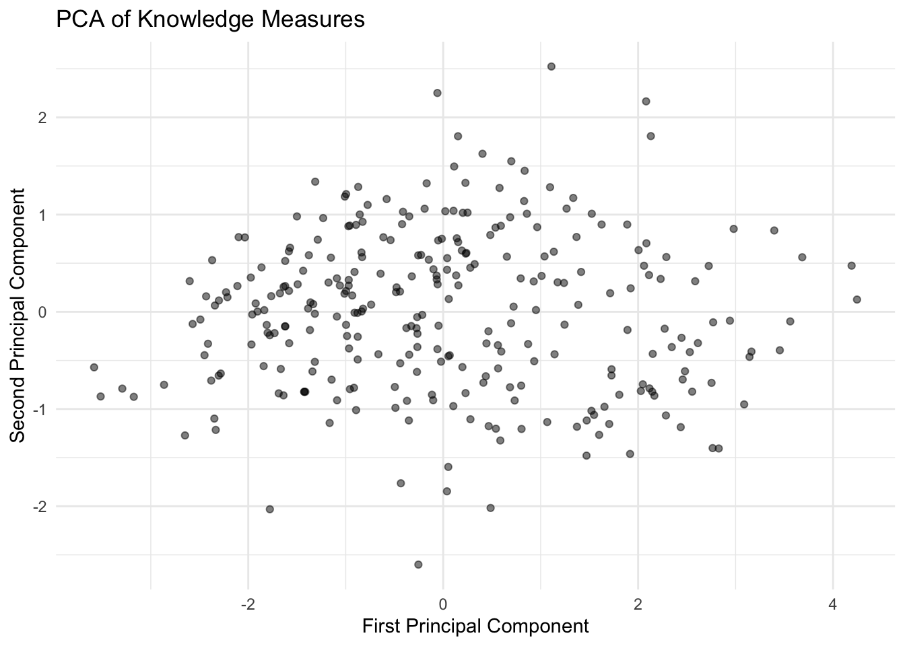
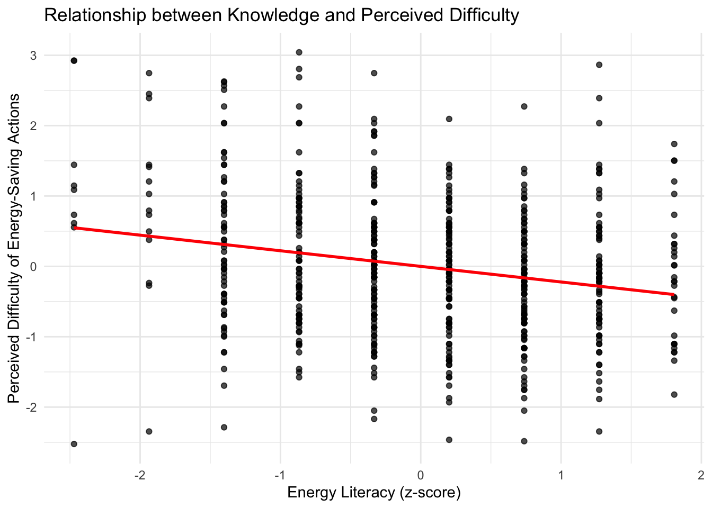
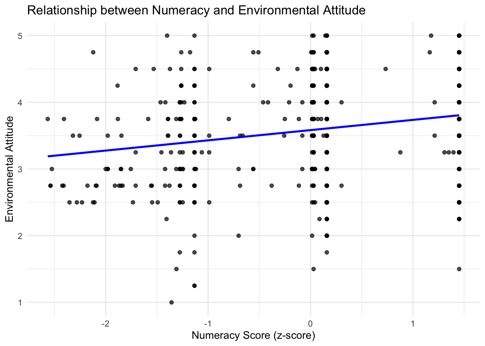
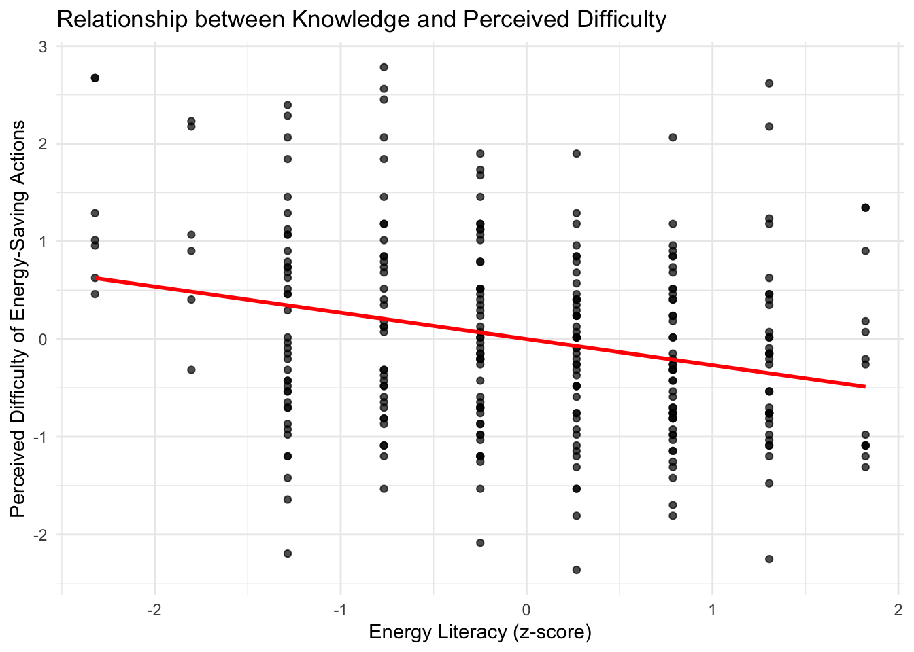
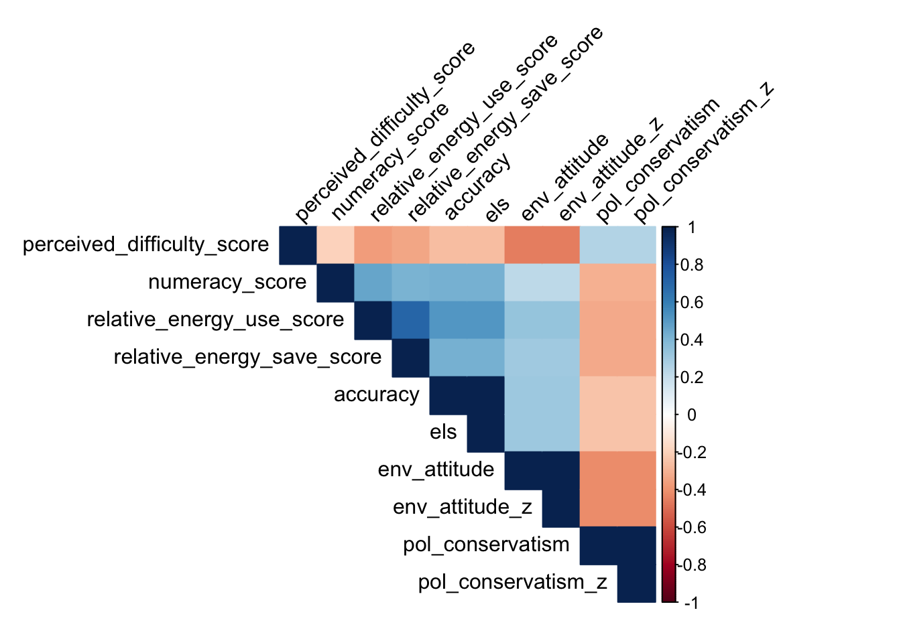
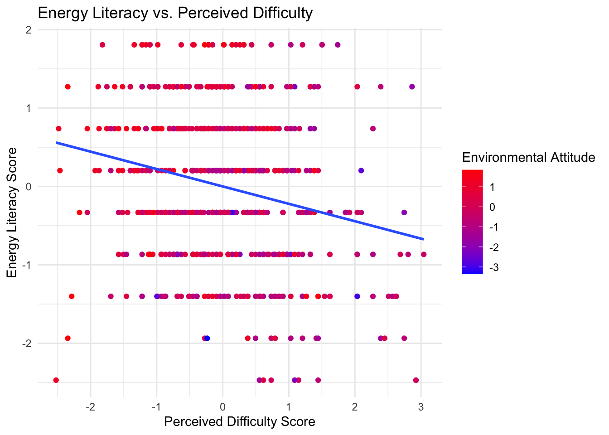
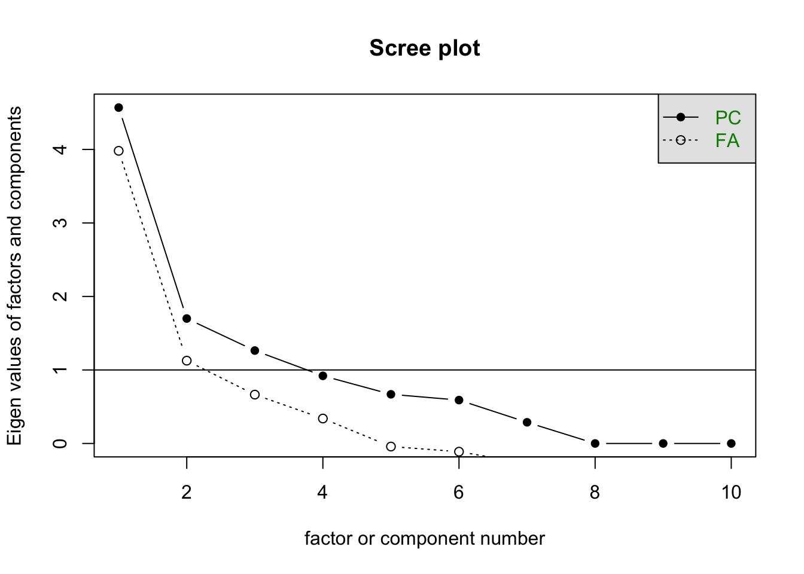
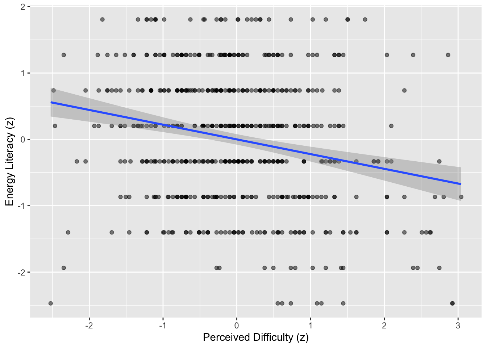

Importance of components:
PC1 PC2 PC3 PC4
Standard deviation 1.492 0.834 0.812 0.648
Proportion of Variance 0.556 0.174 0.165 0.105
Cumulative Proportion 0.556 0.730 0.895 1.000
Display code
# Create scatterplot of first two knowledge componentspca_data<-as.data.frame(knowledge_pca$x)ggplot(pca_data, aes(x=PC1, y=PC2))+geom_point(alpha=0.5)+theme_minimal()+labs(title="PCA of Knowledge Measures", x="First Principal Component", y="Second Principal Component")
# --# 1) Combine the instrument-level data# --# Make sure you have already run your survey-specific analysis functions so that# attari1, attari2_scores, els_scores, rs_scores all exist and contain 'id' plus# their computed subscale(s).combined_df<-attari1%>%full_join(attari2_scores, by ="id")%>%full_join(els_scores, by ="id")%>%full_join(rs_scores, by ="id")# Check the dimensionsdim(combined_df)
# --# 2) Correlation among key subscales/items# --# For demonstration, let’s select these key measures from each instrument:# - perceived_difficulty_score (Attari Part 1)# - numeracy_score (Attari Part 1)# - relative_energy_use_score (Attari Part 2)# - relative_energy_save_score (Attari Part 2)# - els (Energy Literacy total standard score)# - env_attitude (Recycling Study)# - pol_conservatism (Recycling Study)subscales_df<-combined_df%>%select(perceived_difficulty_score,numeracy_score,relative_energy_use_score,relative_energy_save_score,els,env_attitude,pol_conservatism)# Compute pairwise correlationssubscale_cor<-cor(subscales_df, use ="pairwise.complete.obs")# Print the correlation matrixsubscale_cor
# You can also visualize it with corrplot, e.g.:corrplot::corrplot(subscale_cor, method ="ellipse", type ="upper", tl.col ="black", tl.srt =45, addCoef.col ="black", number.cex =0.7)

Display code
# --# 3) Factor / PCA of subscales# --# We'll do a quick principal components analysis (PCA) on these 7 subscales.# If you want a full factor analysis, you can use psych::fa() or similar.library(psych)pca_subscales<-principal(subscales_df, nfactors =2, rotate ="varimax", scores =TRUE)pca_subscales
Principal Components Analysis
Call: principal(r = subscales_df, nfactors = 2, rotate = "varimax",
scores = TRUE)
Standardized loadings (pattern matrix) based upon correlation matrix
RC1 RC2 h2 u2 com
perceived_difficulty_score -0.10 -0.77 0.60 0.40 1.0
numeracy_score 0.71 0.07 0.51 0.49 1.0
relative_energy_use_score 0.81 0.13 0.67 0.33 1.1
relative_energy_save_score 0.75 0.17 0.60 0.40 1.1
els 0.62 0.26 0.45 0.55 1.3
env_attitude 0.12 0.83 0.70 0.30 1.0
pol_conservatism -0.31 -0.42 0.27 0.73 1.8
RC1 RC2
SS loadings 2.22 1.57
Proportion Var 0.32 0.22
Cumulative Var 0.32 0.54
Proportion Explained 0.59 0.41
Cumulative Proportion 0.59 1.00
Mean item complexity = 1.2
Test of the hypothesis that 2 components are sufficient.
The root mean square of the residuals (RMSR) is 0.12
with the empirical chi square 339 with prob < 0.00000000000000000000000000000000000000000000000000000000000000000002
Fit based upon off diagonal values = 0.85
Loadings:
RC1 RC2
numeracy_score 0.707
relative_energy_use_score 0.809
relative_energy_save_score 0.753
els 0.617
perceived_difficulty_score -0.769
env_attitude 0.828
pol_conservatism -0.308 -0.420
RC1 RC2
SS loadings 2.22 1.57
Proportion Var 0.32 0.23
Cumulative Var 0.32 0.54
Display code
# The two-factor solution might (for example) split into a # “Knowledge / Numeracy” factor and a “Motivation / Attitude” factor, # but the actual pattern depends on your data.# --# 4) Some analyses focusing on the link between knowledge# and motivation items# --# (A) Simple correlation between ELS (knowledge) and env_attitude (motivation)with(combined_df, cor(els, env_attitude, use ="pairwise.complete.obs"))
[1] 0.27
Display code
# (B) Regression predicting motivation from knowledge:# e.g., env_attitude ~ ELS + numeracy_score + relative_energy_use_scoremodel_env<-lm(env_attitude~els+numeracy_score+relative_energy_use_score, data =combined_df)summary(model_env)
Call:
lm(formula = env_attitude ~ els + numeracy_score + relative_energy_use_score,
data = combined_df)
Residuals:
Min 1Q Median 3Q Max
-2.2182 -0.4612 0.0582 0.5595 1.7604
Coefficients:
Estimate Std. Error t value Pr(>|t|)
(Intercept) 3.5832 0.0304 117.91 < 0.0000000000000002 ***
els 0.1578 0.0339 4.65 0.0000041 ***
numeracy_score 0.0700 0.0342 2.05 0.041 *
relative_energy_use_score 0.0716 0.0350 2.05 0.041 *
---
Signif. codes: 0 '***' 0.001 '**' 0.01 '*' 0.05 '.' 0.1 ' ' 1
Residual standard error: 0.74 on 582 degrees of freedom
Multiple R-squared: 0.0936, Adjusted R-squared: 0.0889
F-statistic: 20 on 3 and 582 DF, p-value: 0.00000000000227
Display code
# (C) Scatterplot of perceived difficulty (motivation) vs. ELS (knowledge)ggplot(combined_df, aes(x =els, y =perceived_difficulty_score))+geom_point(alpha =0.7)+geom_smooth(method ="lm", se =FALSE, col ="red")+labs( x ="Energy Literacy (z-score)", y ="Perceived Difficulty of Energy-Saving Actions", title ="Relationship between Knowledge and Perceived Difficulty")+theme_minimal()

Display code
# (D) Another scatterplot: Numeracy vs. Env. Attitudeggplot(combined_df, aes(x =numeracy_score, y =env_attitude))+geom_point(alpha =0.7)+geom_smooth(method ="lm", se =FALSE, col ="blue")+labs( x ="Numeracy Score (z-score)", y ="Environmental Attitude", title ="Relationship between Numeracy and Environmental Attitude")+theme_minimal()

Display code
# Additional ideas:# - Add polynomial or interaction terms in regression# - Compare groups (e.g., high vs. low knowledge) on motivation# - Partial correlations controlling for politics or demographics# - Expand item-level factor analysis (including all items from each scale)
SS loadings 2.22 1.57 Proportion Var 0.32 0.23 Cumulative Var 0.32 0.54
# (A) Simple correlation between ELS (knowledge) and env_attitude (motivation) with(combined_df, cor(els, env_attitude, use = “pairwise.complete.obs”)) [1] 0.27
summary(model_env)
Call: lm(formula = env_attitude ~ els + numeracy_score + relative_energy_use_score, data = combined_df)
Residuals: Min 1Q Median 3Q Max -2.2182 -0.4612 0.0582 0.5595 1.7604
Residual standard error: 0.74 on 582 degrees of freedom Multiple R-squared: 0.0936, Adjusted R-squared: 0.0889 F-statistic: 20 on 3 and 582 DF, p-value: 0.00000000000227
Display code
# Combine data from different instrumentsattari1_scores<-analyze_attari_survey_part1(aes_combined)attari2_scores<-analyze_attari_survey(att2_combined)els_scores<-analyze_els_survey(els)rs_scores<-analyze_recycling_survey(rs)combined_data<-full_join(attari1_scores, attari2_scores, by ="id")%>%full_join(els_scores, by ="id")%>%full_join(rs_scores, by ="id")# 1. Analyze instrument correlationscor_matrix<-cor(combined_data[, -1], use ="pairwise.complete.obs")# Visualize correlation matrixcorrplot(cor_matrix, method ="color", type ="upper", tl.col ="black", tl.srt =45)
Factor Analysis using method = minres
Call: fa(r = combined_data[, -1], nfactors = 3, rotate = "varimax")
Standardized loadings (pattern matrix) based upon correlation matrix
MR1 MR3 MR2 h2 u2 com
perceived_difficulty_score -0.23 -0.36 0.06 0.18 0.8181 1.8
numeracy_score 0.42 0.12 -0.19 0.23 0.7746 1.6
relative_energy_use_score 0.52 0.14 -0.16 0.32 0.6809 1.3
relative_energy_save_score 0.48 0.16 -0.15 0.28 0.7219 1.4
accuracy 0.92 0.12 0.00 0.87 0.1320 1.0
els 0.92 0.12 0.00 0.87 0.1320 1.0
env_attitude 0.15 0.98 -0.13 0.99 0.0051 1.1
env_attitude_z 0.15 0.98 -0.13 0.99 0.0051 1.1
pol_conservatism -0.17 -0.14 0.97 0.99 0.0138 1.1
pol_conservatism_z -0.17 -0.14 0.97 0.99 0.0138 1.1
MR1 MR3 MR2
SS loadings 2.53 2.17 2.00
Proportion Var 0.25 0.22 0.20
Cumulative Var 0.25 0.47 0.67
Proportion Explained 0.38 0.32 0.30
Cumulative Proportion 0.38 0.70 1.00
Mean item complexity = 1.3
Test of the hypothesis that 3 factors are sufficient.
df null model = 45 with the objective function = NaN with Chi Square = NaN
df of the model are 18 and the objective function was NaN
The root mean square of the residuals (RMSR) is 0.07
The df corrected root mean square of the residuals is 0.1
The harmonic n.obs is 586 with the empirical chi square 228 with prob < 0.000000000000000000000000000000000000029
The total n.obs was 586 with Likelihood Chi Square = NaN with prob < NaN
Tucker Lewis Index of factoring reliability = NaN
Fit based upon off diagonal values = 0.97
Measures of factor score adequacy
MR1 MR3 MR2
Correlation of (regression) scores with factors 0.95 1.00 0.99
Multiple R square of scores with factors 0.91 1.00 0.99
Minimum correlation of possible factor scores 0.82 0.99 0.98
Display code
# 3. Analyze the relation between motivation and knowledge items# a. Correlation between perceived_difficulty_score and elscor_motivation_knowledge<-cor(combined_data$perceived_difficulty_score, combined_data$els, use ="pairwise.complete.obs")print(paste("Correlation between perceived difficulty and energy literacy:", cor_motivation_knowledge))
[1] "Correlation between perceived difficulty and energy literacy: -0.221786397116371"
Display code
# b. Correlation between env_attitude and elscor_env_knowledge<-cor(combined_data$env_attitude, combined_data$els, use ="pairwise.complete.obs")print(paste("Correlation between environmental attitude and energy literacy:", cor_env_knowledge))
[1] "Correlation between environmental attitude and energy literacy: 0.272737299645857"
Display code
# c. Regression analysis with els as the dependent variable and motivation variables as predictorsmodel<-lm(els~perceived_difficulty_score+env_attitude+pol_conservatism, data =combined_data)summary(model)
Call:
lm(formula = els ~ perceived_difficulty_score + env_attitude +
pol_conservatism, data = combined_data)
Residuals:
Min 1Q Median 3Q Max
-3.171 -0.646 -0.004 0.716 2.333
Coefficients:
Estimate Std. Error t value Pr(>|t|)
(Intercept) -0.6422 0.2390 -2.69 0.0074 **
perceived_difficulty_score -0.1338 0.0425 -3.15 0.0017 **
env_attitude 0.2421 0.0571 4.24 0.000026 ***
pol_conservatism -0.0854 0.0289 -2.96 0.0032 **
---
Signif. codes: 0 '***' 0.001 '**' 0.01 '*' 0.05 '.' 0.1 ' ' 1
Residual standard error: 0.95 on 582 degrees of freedom
Multiple R-squared: 0.104, Adjusted R-squared: 0.0992
F-statistic: 22.5 on 3 and 582 DF, p-value: 0.0000000000000872
Display code
# 4. Visualize the relationship between perceived_difficulty_score, env_attitude_z, and elsggplot(combined_data, aes(x =perceived_difficulty_score, y =els, color =env_attitude_z))+geom_point()+geom_smooth(method ="lm", se =FALSE)+scale_color_gradient(low ="blue", high ="red")+labs(title ="Energy Literacy vs. Perceived Difficulty", x ="Perceived Difficulty Score", y ="Energy Literacy Score", color ="Environmental Attitude")+theme_minimal()

Display code
# 5. Scree Plot and Parallel Analysisscree(combined_data[,-1])
SS loadings 2.53 2.17 2.00 Proportion Var 0.25 0.22 0.20 Cumulative Var 0.25 0.47 0.67 Proportion Explained 0.38 0.32 0.30 Cumulative Proportion 0.38 0.70 1.00
Mean item complexity = 1.3 Test of the hypothesis that 3 factors are sufficient.
df null model = 45 with the objective function = NaN with Chi Square = NaN df of the model are 18 and the objective function was NaN
The root mean square of the residuals (RMSR) is 0.07 The df corrected root mean square of the residuals is 0.1
The harmonic n.obs is 586 with the empirical chi square 228 with prob < 0.000000000000000000000000000000000000029 The total n.obs was 586 with Likelihood Chi Square = NaN with prob < NaN
Tucker Lewis Index of factoring reliability = NaN Fit based upon off diagonal values = 0.97 Measures of factor score adequacy
MR1 MR3 MR2 Correlation of (regression) scores with factors 0.95 1.00 0.99 Multiple R square of scores with factors 0.91 1.00 0.99 Minimum correlation of possible factor scores 0.82 0.99 0.98
r\(> # 3. Analyze the relation between motivation and knowledge items
# a. Correlation between perceived_difficulty_score and els
cor_motivation_knowledge <- cor(combined_data\)perceived_difficulty_score, combined_data$els, use = “pairwise.complete.obs”)
r$> print(paste(“Correlation between perceived difficulty and energy literacy:”, cor_motivation_knowledge)) [1] “Correlation between perceived difficulty and energy literacy: -0.221786397116371”
r\(> # b. Correlation between env_attitude and els
cor_env_knowledge <- cor(combined_data\)env_attitude, combined_data$els, use = “pairwise.complete.obs”)
r$> print(paste(“Correlation between environmental attitude and energy literacy:”, cor_env_knowledge)) [1] “Correlation between environmental attitude and energy literacy: 0.272737299645857”
r$> # c. Regression analysis with els as the dependent variable and motivation variables as predictors model <- lm(els ~ perceived_difficulty_score + env_attitude + pol_conservatism, data = combined_data)
r$> summary(model)
Call: lm(formula = els ~ perceived_difficulty_score + env_attitude + pol_conservatism, data = combined_data)
Residuals: Min 1Q Median 3Q Max -3.171 -0.646 -0.004 0.716 2.333
Residual standard error: 0.95 on 582 degrees of freedom Multiple R-squared: 0.104, Adjusted R-squared: 0.0992 F-statistic: 22.5 on 3 and 582 DF, p-value: 0.0000000000000872
Display code
# Combine all survey scores into a single dataframecombined<-attari1%>%full_join(attari2_scores, by ="id")%>%full_join(els_scores%>%select(id, els), by ="id")%>%full_join(rs_scores%>%select(id, env_attitude_z, pol_conservatism_z), by ="id")# Correlation matrix of key variablescor_vars<-combined%>%select(perceived_difficulty_score, numeracy_score,relative_energy_use_score, relative_energy_save_score,els, env_attitude_z, pol_conservatism_z)cor_matrix<-cor(cor_vars, use ="pairwise.complete.obs")corrplot(cor_matrix, method ="color", type ="upper", tl.col ="black", tl.srt =45, addCoef.col ="black")

Display code
# Factor analysis to identify latent structurefa_model<-psych::fa(cor_vars[complete.cases(cor_vars), ], nfactors =2, rotate ="varimax", fm ="ml")print(fa_model, cut =0.3)
Factor Analysis using method = ml
Call: psych::fa(r = cor_vars[complete.cases(cor_vars), ], nfactors = 2,
rotate = "varimax", fm = "ml")
Standardized loadings (pattern matrix) based upon correlation matrix
ML2 ML1 h2 u2 com
perceived_difficulty_score -0.37 0.19 0.807 1.7
numeracy_score 0.51 0.28 0.720 1.2
relative_energy_use_score 0.78 0.63 0.374 1.1
relative_energy_save_score 0.69 0.50 0.497 1.1
els 0.49 0.29 0.709 1.4
env_attitude_z 0.99 1.00 0.005 1.0
pol_conservatism_z 0.14 0.860 2.0
ML2 ML1
SS loadings 1.71 1.31
Proportion Var 0.24 0.19
Cumulative Var 0.24 0.43
Proportion Explained 0.57 0.43
Cumulative Proportion 0.57 1.00
Mean item complexity = 1.4
Test of the hypothesis that 2 factors are sufficient.
df null model = 21 with the objective function = 1.3 with Chi Square = 760
df of the model are 8 and the objective function was 0.03
The root mean square of the residuals (RMSR) is 0.03
The df corrected root mean square of the residuals is 0.04
The harmonic n.obs is 586 with the empirical chi square 18 with prob < 0.025
The total n.obs was 586 with Likelihood Chi Square = 16 with prob < 0.036
Tucker Lewis Index of factoring reliability = 0.97
RMSEA index = 0.042 and the 90 % confidence intervals are 0.01 0.072
BIC = -35
Fit based upon off diagonal values = 0.99
Measures of factor score adequacy
ML2 ML1
Correlation of (regression) scores with factors 0.87 1.00
Multiple R square of scores with factors 0.77 0.99
Minimum correlation of possible factor scores 0.53 0.99
Display code
# Perceived Difficulty vs Knowledgeggplot(combined, aes(perceived_difficulty_score, els))+geom_point(alpha =0.5)+geom_smooth(method ="lm")+labs(x ="Perceived Difficulty (z)", y ="Energy Literacy (z)")

Display code
# Environmental Attitude vs Knowledgeggplot(combined, aes(env_attitude_z, els))+geom_point(alpha =0.5)+geom_smooth(method ="lm")+labs(x ="Pro-Environmental Attitude (z)", y ="Energy Literacy (z)")

Display code
# Predict Energy Literacy from Motivationmodel_els<-lm(els~perceived_difficulty_score+env_attitude_z, data =combined)summary(model_els)
Call:
lm(formula = els ~ perceived_difficulty_score + env_attitude_z,
data = combined)
Residuals:
Min 1Q Median 3Q Max
-3.0786 -0.6787 0.0272 0.7021 2.3542
Coefficients:
Estimate Std. Error t value
(Intercept) 0.000000000000000221 0.039466198562163532 0.00
perceived_difficulty_score -0.137043156114381365 0.042805101308446926 -3.20
env_attitude_z 0.219932562179007085 0.042805101308446947 5.14
Pr(>|t|)
(Intercept) 1.0000
perceived_difficulty_score 0.0014 **
env_attitude_z 0.00000038 ***
---
Signif. codes: 0 '***' 0.001 '**' 0.01 '*' 0.05 '.' 0.1 ' ' 1
Residual standard error: 0.95 on 583 degrees of freedom
Multiple R-squared: 0.0904, Adjusted R-squared: 0.0873
F-statistic: 29 on 2 and 583 DF, p-value: 0.00000000000102
Display code
# Predict Numeracy from Motivationmodel_numeracy<-lm(numeracy_score~perceived_difficulty_score+env_attitude_z, data =combined)summary(model_numeracy)
Call:
lm(formula = numeracy_score ~ perceived_difficulty_score + env_attitude_z,
data = combined)
Residuals:
Min 1Q Median 3Q Max
-2.5895 -0.4958 0.0285 0.4315 2.0590
Coefficients:
Estimate Std. Error t value
(Intercept) 0.0000000000000144 0.0404741361250743 0.00
perceived_difficulty_score -0.0660112042229361 0.0438983119814999 -1.50
env_attitude_z 0.1735929007614459 0.0438983119815000 3.95
Pr(>|t|)
(Intercept) 1.00
perceived_difficulty_score 0.13
env_attitude_z 0.000086 ***
---
Signif. codes: 0 '***' 0.001 '**' 0.01 '*' 0.05 '.' 0.1 ' ' 1
Residual standard error: 0.98 on 583 degrees of freedom
Multiple R-squared: 0.0433, Adjusted R-squared: 0.04
F-statistic: 13.2 on 2 and 583 DF, p-value: 0.00000247
print(fa_model, cut = 0.3) Factor Analysis using method = ml Call: psych::fa(r = cor_vars[complete.cases(cor_vars), ], nfactors = 2, rotate = “varimax”, fm = “ml”) Standardized loadings (pattern matrix) based upon correlation matrix ML2 ML1 h2 u2 com perceived_difficulty_score -0.37 0.19 0.807 1.7 numeracy_score 0.51 0.28 0.720 1.2 relative_energy_use_score 0.78 0.63 0.374 1.1 relative_energy_save_score 0.69 0.50 0.497 1.1 els 0.49 0.29 0.709 1.4 env_attitude_z 0.99 1.00 0.005 1.0 pol_conservatism_z 0.14 0.860 2.0
ML2 ML1
SS loadings 1.71 1.31 Proportion Var 0.24 0.19 Cumulative Var 0.24 0.43 Proportion Explained 0.57 0.43 Cumulative Proportion 0.57 1.00
Mean item complexity = 1.4 Test of the hypothesis that 2 factors are sufficient.
df null model = 21 with the objective function = 1.3 with Chi Square = 760 df of the model are 8 and the objective function was 0.03
The root mean square of the residuals (RMSR) is 0.03 The df corrected root mean square of the residuals is 0.04
The harmonic n.obs is 586 with the empirical chi square 18 with prob < 0.025 The total n.obs was 586 with Likelihood Chi Square = 16 with prob < 0.036
Tucker Lewis Index of factoring reliability = 0.97 RMSEA index = 0.042 and the 90 % confidence intervals are 0.01 0.072 BIC = -35 Fit based upon off diagonal values = 0.99 Measures of factor score adequacy
ML2 ML1 Correlation of (regression) scores with factors 0.87 1.00 Multiple R square of scores with factors 0.77 0.99 Minimum correlation of possible factor scores 0.53 0.99
summary(model_els)
Call: lm(formula = els ~ perceived_difficulty_score + env_attitude_z, data = combined)
Residuals: Min 1Q Median 3Q Max -3.0786 -0.6787 0.0272 0.7021 2.3542
Residual standard error: 0.95 on 583 degrees of freedom Multiple R-squared: 0.0904, Adjusted R-squared: 0.0873 F-statistic: 29 on 2 and 583 DF, p-value: 0.00000000000102
Residual standard error: 0.98 on 583 degrees of freedom Multiple R-squared: 0.0433, Adjusted R-squared: 0.04 F-statistic: 13.2 on 2 and 583 DF, p-value: 0.00000247
# Composite correlation cor.test(combined\(composite_knowledge, combined\)composite_motivation, use = “pairwise.complete.obs”)
Pearson's product-moment correlation
data: combined\(composite_knowledge and combined\)composite_motivation t = 9, df = 584, p-value <0.0000000000000002 alternative hypothesis: true correlation is not equal to 0 95 percent confidence interval: 0.28 0.42 sample estimates: cor 0.35
Display code
combined_df<-attari1%>%full_join(attari2_scores, by ="id")%>%full_join(els_scores, by ="id")%>%full_join(rs_scores, by ="id")# View the first few rowshead(combined_df)
corrplot::corrplot(cor_matrix, method ="ellipse", type ="upper", tl.srt =45)
Display code
# 3) Assess whether these subscales share underlying structure via Factor Analysis (EFA)# For a quick exploration, we can request 2-3 factors and see how items load.# Extract just the columns for the factor analysisfa_data<-combined_df%>%select(all_of(key_vars))%>%na.omit()# Number of factors to extract determined by parallel analysis or theoretical reasons; # here we try with 2 factors for demonstration:set.seed(123)fa_results<-psych::fa(r =fa_data, nfactors =2, rotate ="varimax", fm ="ml")print(fa_results, digits =2, sort =TRUE)
Factor Analysis using method = ml
Call: psych::fa(r = fa_data, nfactors = 2, rotate = "varimax", fm = "ml")
Standardized loadings (pattern matrix) based upon correlation matrix
item ML2 ML1 h2 u2 com
relative_energy_use_score 3 0.78 0.14 0.63 0.374 1.1
relative_energy_save_score 4 0.69 0.16 0.50 0.497 1.1
numeracy_score 2 0.51 0.15 0.28 0.720 1.2
els 5 0.49 0.23 0.29 0.709 1.4
pol_conservatism 7 -0.27 -0.26 0.14 0.860 2.0
env_attitude 6 0.09 0.99 1.00 0.005 1.0
perceived_difficulty_score 1 -0.24 -0.37 0.19 0.807 1.7
ML2 ML1
SS loadings 1.71 1.31
Proportion Var 0.24 0.19
Cumulative Var 0.24 0.43
Proportion Explained 0.57 0.43
Cumulative Proportion 0.57 1.00
Mean item complexity = 1.4
Test of the hypothesis that 2 factors are sufficient.
df null model = 21 with the objective function = 1.3 with Chi Square = 760
df of the model are 8 and the objective function was 0.03
The root mean square of the residuals (RMSR) is 0.03
The df corrected root mean square of the residuals is 0.04
The harmonic n.obs is 586 with the empirical chi square 18 with prob < 0.025
The total n.obs was 586 with Likelihood Chi Square = 16 with prob < 0.036
Tucker Lewis Index of factoring reliability = 0.97
RMSEA index = 0.042 and the 90 % confidence intervals are 0.01 0.072
BIC = -35
Fit based upon off diagonal values = 0.99
Measures of factor score adequacy
ML2 ML1
Correlation of (regression) scores with factors 0.87 1.00
Multiple R square of scores with factors 0.77 0.99
Minimum correlation of possible factor scores 0.53 0.99
Display code
# 4) Inspect the specific relationship between motivation and knowledge items.# For instance, do an OLS regression testing if environmental attitude (motivation)# predicts Energy Literacy (knowledge):model_env_els<-lm(els~env_attitude, data =combined_df)summary(model_env_els)
Call:
lm(formula = els ~ env_attitude, data = combined_df)
Residuals:
Min 1Q Median 3Q Max
-2.7955 -0.6605 -0.0334 0.7667 2.1901
Coefficients:
Estimate Std. Error t value Pr(>|t|)
(Intercept) -1.2680 0.1893 -6.70 0.000000000050 ***
env_attitude 0.3539 0.0517 6.85 0.000000000019 ***
---
Signif. codes: 0 '***' 0.001 '**' 0.01 '*' 0.05 '.' 0.1 ' ' 1
Residual standard error: 0.96 on 584 degrees of freedom
Multiple R-squared: 0.0744, Adjusted R-squared: 0.0728
F-statistic: 46.9 on 1 and 584 DF, p-value: 0.0000000000187
Display code
# Another regression: see if perceived difficulty (motivation) predicts numeracy (knowledge)model_diff_num<-lm(numeracy_score~perceived_difficulty_score, data =combined_df)summary(model_diff_num)
Call:
lm(formula = numeracy_score ~ perceived_difficulty_score, data = combined_df)
Residuals:
Min 1Q Median 3Q Max
-2.5380 -0.5194 0.0836 0.3006 1.8322
Coefficients:
Estimate Std. Error t value
(Intercept) 0.0000000000000144 0.0409782243863863 0.00
perceived_difficulty_score -0.1328990942184530 0.0410132335549985 -3.24
Pr(>|t|)
(Intercept) 1.0000
perceived_difficulty_score 0.0013 **
---
Signif. codes: 0 '***' 0.001 '**' 0.01 '*' 0.05 '.' 0.1 ' ' 1
Residual standard error: 0.99 on 584 degrees of freedom
Multiple R-squared: 0.0177, Adjusted R-squared: 0.016
F-statistic: 10.5 on 1 and 584 DF, p-value: 0.00126
Display code
# 5) Example of a more complex model: # Predict knowledge (ELS) from both environment attitude and numeracy, controlling for political conservatismmodel_complex<-lm(els~env_attitude+pol_conservatism+numeracy_score, data =combined_df)summary(model_complex)
Call:
lm(formula = els ~ env_attitude + pol_conservatism + numeracy_score,
data = combined_df)
Residuals:
Min 1Q Median 3Q Max
-2.9385 -0.6354 0.0088 0.6822 2.1663
Coefficients:
Estimate Std. Error t value Pr(>|t|)
(Intercept) -0.7996 0.2201 -3.63 0.00031 ***
env_attitude 0.2563 0.0518 4.95 0.0000009827500 ***
pol_conservatism -0.0451 0.0285 -1.58 0.11393
numeracy_score 0.2859 0.0395 7.23 0.0000000000015 ***
---
Signif. codes: 0 '***' 0.001 '**' 0.01 '*' 0.05 '.' 0.1 ' ' 1
Residual standard error: 0.92 on 582 degrees of freedom
Multiple R-squared: 0.164, Adjusted R-squared: 0.159
F-statistic: 38 on 3 and 582 DF, p-value: <0.0000000000000002
Display code
# 6) Quick plots to visualize the relationship between motivation and knowledgeggplot(combined_df, aes(x =env_attitude, y =els))+geom_point(alpha =0.6)+geom_smooth(method ="lm", se =FALSE, color ="blue")+labs( title ="Energy Literacy vs. Environmental Attitude", x ="Environmental Attitude (higher = more pro-environment)", y ="Energy Literacy (standardized)")+theme_minimal()

Display code
ggplot(combined_df, aes(x =perceived_difficulty_score, y =numeracy_score))+geom_point(alpha =0.6)+geom_smooth(method ="lm", se =FALSE, color ="red")+labs( title ="Numeracy vs. Perceived Difficulty", x ="Perceived Difficulty (standardized)", y ="Numeracy (standardized)")+theme_minimal()
SS loadings 1.71 1.31 Proportion Var 0.24 0.19 Cumulative Var 0.24 0.43 Proportion Explained 0.57 0.43 Cumulative Proportion 0.57 1.00
Mean item complexity = 1.4 Test of the hypothesis that 2 factors are sufficient.
df null model = 21 with the objective function = 1.3 with Chi Square = 760 df of the model are 8 and the objective function was 0.03
The root mean square of the residuals (RMSR) is 0.03 The df corrected root mean square of the residuals is 0.04
The harmonic n.obs is 586 with the empirical chi square 18 with prob < 0.025 The total n.obs was 586 with Likelihood Chi Square = 16 with prob < 0.036
Tucker Lewis Index of factoring reliability = 0.97 RMSEA index = 0.042 and the 90 % confidence intervals are 0.01 0.072 BIC = -35 Fit based upon off diagonal values = 0.99 Measures of factor score adequacy
ML2 ML1 Correlation of (regression) scores with factors 0.87 1.00 Multiple R square of scores with factors 0.77 0.99 Minimum correlation of possible factor scores 0.53 0.99
summary(model_env_els)
Call: lm(formula = els ~ env_attitude, data = combined_df)
Residuals: Min 1Q Median 3Q Max -2.7955 -0.6605 -0.0334 0.7667 2.1901
Residual standard error: 0.96 on 584 degrees of freedom Multiple R-squared: 0.0744, Adjusted R-squared: 0.0728 F-statistic: 46.9 on 1 and 584 DF, p-value: 0.0000000000187
summary(model_diff_num)
Call: lm(formula = numeracy_score ~ perceived_difficulty_score, data = combined_df)
Residuals: Min 1Q Median 3Q Max -2.5380 -0.5194 0.0836 0.3006 1.8322
Residual standard error: 0.99 on 584 degrees of freedom Multiple R-squared: 0.0177, Adjusted R-squared: 0.016 F-statistic: 10.5 on 1 and 584 DF, p-value: 0.00126
summary(model_complex)
Call: lm(formula = els ~ env_attitude + pol_conservatism + numeracy_score, data = combined_df)
Residuals: Min 1Q Median 3Q Max -2.9385 -0.6354 0.0088 0.6822 2.1663
Residual standard error: 0.92 on 582 degrees of freedom Multiple R-squared: 0.164, Adjusted R-squared: 0.159 F-statistic: 38 on 3 and 582 DF, p-value: <0.0000000000000002
Source Code
---title: "Instrument Correlations_b"execute: echo: true warning: falseformat: html: grid: sidebar-width: 220px body-width: 1200px margin-width: 170px gutter-width: 1.0rem hugo-md: include: true html-math-method: mathjax output-file: cor1_hugo.md---```{r}pacman::p_load(dplyr,purrr,tidyr,here, haven,tibble,ggplot2,ggh4x,lme4,knitr,kableExtra,gt,pander,flextable,ggh4x,psych,corrplot)options(digits=2, scipen=999, dplyr.summarise.inform=FALSE)source(here("scripts","survey_functions.R"))draw <-readRDS(here("data","draw.rds"))dinst <-readRDS(here("data","dinst.rds"))# Attari Energy Survey (Part 1)aes1 <- draw |>select(id,ATT01:ATT18)aes2 <- dinst |>select(id,ATT01:ATT18)aes_combined <-bind_rows(aes1, aes2)att_useSave <- draw |>select(id,ATT19:ATT33)att_useSave2 <- dinst |>select(id,ATT19:ATT33)att2_combined <-bind_rows(att_useSave, att_useSave2)els1 <- draw |>select(id,ELS01:ELS08)els2 <- dinst |>select(id,ELS01:ELS08)els <-bind_rows(els1,els2)rs1 <- draw |>select(id,RS01:RS06)rs2 <- dinst |>select(id,RS01:RS06)rs <-bind_rows(rs1,rs2)``````{r}attari1 <-analyze_attari_survey_part1(aes_combined)attari2_scores <-analyze_attari_survey(att2_combined)els_scores <-analyze_els_survey(els)rs_scores <-analyze_recycling_survey(rs)``````{r}# Combine all scores into one dataframecombined_scores <- attari1 %>%left_join(attari2_scores, by="id") %>%left_join(els_scores, by="id") %>%left_join(rs_scores, by="id")# Rename columns for claritynames(combined_scores) <-c("id", "perceived_difficulty", "numeracy", "energy_use", "energy_save", "els_accuracy", "els_score","env_attitude", "env_attitude_z","pol_conservatism", "pol_conservatism_z")# Create correlation matrix for knowledge measuresknowledge_cors <- combined_scores %>%select(numeracy, energy_use, energy_save, els_score) %>%cor(use="pairwise.complete.obs")# Create correlation matrix for motivation/attitude measuresmotivation_cors <- combined_scores %>%select(perceived_difficulty, env_attitude_z, pol_conservatism_z) %>%cor(use="pairwise.complete.obs")# Create correlation matrix between knowledge and motivation measuresknowledge_motivation_cors <-cor( combined_scores %>%select(numeracy, energy_use, energy_save, els_score), combined_scores %>%select(perceived_difficulty, env_attitude_z, pol_conservatism_z),use="pairwise.complete.obs")# Principal Components Analysis for knowledge measuresknowledge_pca <-prcomp(combined_scores %>%select(numeracy, energy_use, energy_save, els_score),scale=TRUE)# Print correlationsprint("Knowledge measure correlations:")print(knowledge_cors)print("\nMotivation measure correlations:")print(motivation_cors)print("\nKnowledge-Motivation correlations:")print(knowledge_motivation_cors)# Print PCA summaryprint("\nPCA Summary for knowledge measures:")print(summary(knowledge_pca))# Create scatterplot of first two knowledge componentspca_data <-as.data.frame(knowledge_pca$x)ggplot(pca_data, aes(x=PC1, y=PC2)) +geom_point(alpha=0.5) +theme_minimal() +labs(title="PCA of Knowledge Measures",x="First Principal Component",y="Second Principal Component")```[1] "Knowledge measure correlations:" numeracy energy_use energy_save els_scorenumeracy 1.00 0.41 0.34 0.34energy_use 0.41 1.00 0.57 0.40energy_save 0.34 0.57 1.00 0.36els_score 0.34 0.40 0.36 1.00[1] "\nMotivation measure correlations:" perceived_difficulty env_attitude_z pol_conservatism_zperceived_difficulty 1.00 -0.39 0.13env_attitude_z -0.39 1.00 -0.29pol_conservatism_z 0.13 -0.29 1.00[1] "\nKnowledge-Motivation correlations:" perceived_difficulty env_attitude_z pol_conservatism_znumeracy -0.13 0.20 -0.25energy_use -0.24 0.21 -0.23energy_save -0.25 0.22 -0.22els_score -0.22 0.27 -0.19[1] "\nPCA Summary for knowledge measures:"Importance of components: PC1 PC2 PC3 PC4Standard deviation 1.492 0.834 0.812 0.648Proportion of Variance 0.556 0.174 0.165 0.105Cumulative Proportion 0.556 0.730 0.895 1.000```{r}# --# 1) Combine the instrument-level data# --# Make sure you have already run your survey-specific analysis functions so that# attari1, attari2_scores, els_scores, rs_scores all exist and contain 'id' plus# their computed subscale(s).combined_df <- attari1 %>%full_join(attari2_scores, by ="id") %>%full_join(els_scores, by ="id") %>%full_join(rs_scores, by ="id")# Check the dimensionsdim(combined_df)# Inspect a few rowshead(combined_df)# --# 2) Correlation among key subscales/items# --# For demonstration, let’s select these key measures from each instrument:# - perceived_difficulty_score (Attari Part 1)# - numeracy_score (Attari Part 1)# - relative_energy_use_score (Attari Part 2)# - relative_energy_save_score (Attari Part 2)# - els (Energy Literacy total standard score)# - env_attitude (Recycling Study)# - pol_conservatism (Recycling Study)subscales_df <- combined_df %>%select( perceived_difficulty_score, numeracy_score, relative_energy_use_score, relative_energy_save_score, els, env_attitude, pol_conservatism )# Compute pairwise correlationssubscale_cor <-cor(subscales_df, use ="pairwise.complete.obs")# Print the correlation matrixsubscale_cor# You can also visualize it with corrplot, e.g.:corrplot::corrplot(subscale_cor, method ="ellipse", type ="upper",tl.col ="black", tl.srt =45,addCoef.col ="black", number.cex =0.7)# --# 3) Factor / PCA of subscales# --# We'll do a quick principal components analysis (PCA) on these 7 subscales.# If you want a full factor analysis, you can use psych::fa() or similar.library(psych)pca_subscales <-principal(subscales_df, nfactors =2, rotate ="varimax", scores =TRUE)pca_subscales# Examine loadingsprint(pca_subscales$loadings, cutoff =0.30, sort =TRUE)# The two-factor solution might (for example) split into a # “Knowledge / Numeracy” factor and a “Motivation / Attitude” factor, # but the actual pattern depends on your data.# --# 4) Some analyses focusing on the link between knowledge# and motivation items# --# (A) Simple correlation between ELS (knowledge) and env_attitude (motivation)with(combined_df, cor(els, env_attitude, use ="pairwise.complete.obs"))# (B) Regression predicting motivation from knowledge:# e.g., env_attitude ~ ELS + numeracy_score + relative_energy_use_scoremodel_env <-lm(env_attitude ~ els + numeracy_score + relative_energy_use_score, data = combined_df)summary(model_env)# (C) Scatterplot of perceived difficulty (motivation) vs. ELS (knowledge)ggplot(combined_df, aes(x = els, y = perceived_difficulty_score)) +geom_point(alpha =0.7) +geom_smooth(method ="lm", se =FALSE, col ="red") +labs(x ="Energy Literacy (z-score)",y ="Perceived Difficulty of Energy-Saving Actions",title ="Relationship between Knowledge and Perceived Difficulty" ) +theme_minimal()# (D) Another scatterplot: Numeracy vs. Env. Attitudeggplot(combined_df, aes(x = numeracy_score, y = env_attitude)) +geom_point(alpha =0.7) +geom_smooth(method ="lm", se =FALSE, col ="blue") +labs(x ="Numeracy Score (z-score)",y ="Environmental Attitude",title ="Relationship between Numeracy and Environmental Attitude" ) +theme_minimal()# Additional ideas:# - Add polynomial or interaction terms in regression# - Compare groups (e.g., high vs. low knowledge) on motivation# - Partial correlations controlling for politics or demographics# - Expand item-level factor analysis (including all items from each scale)``` subscale_cor perceived_difficulty_score numeracy_score relative_energy_use_score relative_energy_save_score els env_attitude pol_conservatismperceived_difficulty_score 1.00 -0.13 -0.24 -0.25 -0.22 -0.39 0.13numeracy_score -0.13 1.00 0.41 0.34 0.34 0.20 -0.25relative_energy_use_score -0.24 0.41 1.00 0.57 0.40 0.21 -0.23relative_energy_save_score -0.25 0.34 0.57 1.00 0.36 0.22 -0.22els -0.22 0.34 0.40 0.36 1.00 0.27 -0.19env_attitude -0.39 0.20 0.21 0.22 0.27 1.00 -0.29pol_conservatism 0.13 -0.25 -0.23 -0.22 -0.19 -0.29 1.00pca_subscalesPrincipal Components AnalysisCall: principal(r = subscales_df, nfactors = 2, rotate = "varimax", scores = TRUE)Standardized loadings (pattern matrix) based upon correlation matrix RC1 RC2 h2 u2 comperceived_difficulty_score -0.10 -0.77 0.60 0.40 1.0numeracy_score 0.71 0.07 0.51 0.49 1.0relative_energy_use_score 0.81 0.13 0.67 0.33 1.1relative_energy_save_score 0.75 0.17 0.60 0.40 1.1els 0.62 0.26 0.45 0.55 1.3env_attitude 0.12 0.83 0.70 0.30 1.0pol_conservatism -0.31 -0.42 0.27 0.73 1.8 RC1 RC2SS loadings 2.22 1.57Proportion Var 0.32 0.22Cumulative Var 0.32 0.54Proportion Explained 0.59 0.41Cumulative Proportion 0.59 1.00Mean item complexity = 1.2Test of the hypothesis that 2 components are sufficient.The root mean square of the residuals (RMSR) is 0.12 with the empirical chi square 339 with prob < 0.00# Examine loadings print(pca_subscales$loadings, cutoff = 0.30, sort = TRUE)Loadings: RC1 RC2 numeracy_score 0.707 relative_energy_use_score 0.809 relative_energy_save_score 0.753 els 0.617 perceived_difficulty_score -0.769env_attitude 0.828pol_conservatism -0.308 -0.420 RC1 RC2SS loadings 2.22 1.57Proportion Var 0.32 0.23Cumulative Var 0.32 0.54 # (A) Simple correlation between ELS (knowledge) and env_attitude (motivation) with(combined_df, cor(els, env_attitude, use = "pairwise.complete.obs"))[1] 0.27summary(model_env)Call:lm(formula = env_attitude ~ els + numeracy_score + relative_energy_use_score, data = combined_df)Residuals: Min 1Q Median 3Q Max -2.2182 -0.4612 0.0582 0.5595 1.7604 Coefficients: Estimate Std. Error t value Pr(>|t|) (Intercept) 3.5832 0.0304 117.91 < 0.0000000000000002 ***els 0.1578 0.0339 4.65 0.0000041 ***numeracy_score 0.0700 0.0342 2.05 0.041 * relative_energy_use_score 0.0716 0.0350 2.05 0.041 * --Signif. codes: 0 ‘***’ 0.001 ‘**’ 0.01 ‘*’ 0.05 ‘.’ 0.1 ‘ ’ 1Residual standard error: 0.74 on 582 degrees of freedomMultiple R-squared: 0.0936, Adjusted R-squared: 0.0889 F-statistic: 20 on 3 and 582 DF, p-value: 0.00000000000227```{r}# Combine data from different instrumentsattari1_scores <-analyze_attari_survey_part1(aes_combined)attari2_scores <-analyze_attari_survey(att2_combined)els_scores <-analyze_els_survey(els)rs_scores <-analyze_recycling_survey(rs)combined_data <-full_join(attari1_scores, attari2_scores, by ="id") %>%full_join(els_scores, by ="id") %>%full_join(rs_scores, by ="id")# 1. Analyze instrument correlationscor_matrix <-cor(combined_data[, -1], use ="pairwise.complete.obs")# Visualize correlation matrixcorrplot(cor_matrix, method ="color", type ="upper", tl.col ="black", tl.srt =45)# 2. Assess underlying structure using factor analysisfa_result <-fa(combined_data[, -1], nfactors =3, rotate ="varimax")print(fa_result)# 3. Analyze the relation between motivation and knowledge items# a. Correlation between perceived_difficulty_score and elscor_motivation_knowledge <-cor(combined_data$perceived_difficulty_score, combined_data$els, use ="pairwise.complete.obs")print(paste("Correlation between perceived difficulty and energy literacy:", cor_motivation_knowledge))# b. Correlation between env_attitude and elscor_env_knowledge <-cor(combined_data$env_attitude, combined_data$els, use ="pairwise.complete.obs")print(paste("Correlation between environmental attitude and energy literacy:", cor_env_knowledge))# c. Regression analysis with els as the dependent variable and motivation variables as predictorsmodel <-lm(els ~ perceived_difficulty_score + env_attitude + pol_conservatism, data = combined_data)summary(model)# 4. Visualize the relationship between perceived_difficulty_score, env_attitude_z, and elsggplot(combined_data, aes(x = perceived_difficulty_score, y = els, color = env_attitude_z)) +geom_point() +geom_smooth(method ="lm", se =FALSE) +scale_color_gradient(low ="blue", high ="red") +labs(title ="Energy Literacy vs. Perceived Difficulty",x ="Perceived Difficulty Score",y ="Energy Literacy Score",color ="Environmental Attitude") +theme_minimal()# 5. Scree Plot and Parallel Analysisscree(combined_data[,-1])fa.parallel(combined_data[,-1], fa="both", n.iter=100, main="Parallel Analysis")```cor_matrix perceived_difficulty_score numeracy_score relative_energy_use_score relative_energy_save_score accuracy els env_attitude env_attitude_zperceived_difficulty_score 1.00 -0.13 -0.24 -0.25 -0.22 -0.22 -0.39 -0.39numeracy_score -0.13 1.00 0.41 0.34 0.34 0.34 0.20 0.20relative_energy_use_score -0.24 0.41 1.00 0.57 0.40 0.40 0.21 0.21relative_energy_save_score -0.25 0.34 0.57 1.00 0.36 0.36 0.22 0.22accuracy -0.22 0.34 0.40 0.36 1.00 1.00 0.27 0.27els -0.22 0.34 0.40 0.36 1.00 1.00 0.27 0.27env_attitude -0.39 0.20 0.21 0.22 0.27 0.27 1.00 1.00env_attitude_z -0.39 0.20 0.21 0.22 0.27 0.27 1.00 1.00pol_conservatism 0.13 -0.25 -0.23 -0.22 -0.19 -0.19 -0.29 -0.29pol_conservatism_z 0.13 -0.25 -0.23 -0.22 -0.19 -0.19 -0.29 -0.29 pol_conservatism pol_conservatism_zperceived_difficulty_score 0.13 0.13numeracy_score -0.25 -0.25relative_energy_use_score -0.23 -0.23relative_energy_save_score -0.22 -0.22accuracy -0.19 -0.19els -0.19 -0.19env_attitude -0.29 -0.29env_attitude_z -0.29 -0.29pol_conservatism 1.00 1.00pol_conservatism_z 1.00 1.00print(fa_result)Factor Analysis using method = minresCall: fa(r = combined_data[, -1], nfactors = 3, rotate = "varimax")Standardized loadings (pattern matrix) based upon correlation matrix MR1 MR3 MR2 h2 u2 comperceived_difficulty_score -0.23 -0.36 0.06 0.18 0.8181 1.8numeracy_score 0.42 0.12 -0.19 0.23 0.7746 1.6relative_energy_use_score 0.52 0.14 -0.16 0.32 0.6809 1.3relative_energy_save_score 0.48 0.16 -0.15 0.28 0.7219 1.4accuracy 0.92 0.12 0.00 0.87 0.1320 1.0els 0.92 0.12 0.00 0.87 0.1320 1.0env_attitude 0.15 0.98 -0.13 0.99 0.0051 1.1env_attitude_z 0.15 0.98 -0.13 0.99 0.0051 1.1pol_conservatism -0.17 -0.14 0.97 0.99 0.0138 1.1pol_conservatism_z -0.17 -0.14 0.97 0.99 0.0138 1.1 MR1 MR3 MR2SS loadings 2.53 2.17 2.00Proportion Var 0.25 0.22 0.20Cumulative Var 0.25 0.47 0.67Proportion Explained 0.38 0.32 0.30Cumulative Proportion 0.38 0.70 1.00Mean item complexity = 1.3Test of the hypothesis that 3 factors are sufficient.df null model = 45 with the objective function = NaN with Chi Square = NaNdf of the model are 18 and the objective function was NaN The root mean square of the residuals (RMSR) is 0.07 The df corrected root mean square of the residuals is 0.1 The harmonic n.obs is 586 with the empirical chi square 228 with prob < 0.000000000000000000000000000000000000029 The total n.obs was 586 with Likelihood Chi Square = NaN with prob < NaN Tucker Lewis Index of factoring reliability = NaNFit based upon off diagonal values = 0.97Measures of factor score adequacy MR1 MR3 MR2Correlation of (regression) scores with factors 0.95 1.00 0.99Multiple R square of scores with factors 0.91 1.00 0.99Minimum correlation of possible factor scores 0.82 0.99 0.98r$> # 3. Analyze the relation between motivation and knowledge items # a. Correlation between perceived_difficulty_score and els cor_motivation_knowledge <- cor(combined_data$perceived_difficulty_score, combined_data$els, use = "pairwise.complete.obs")r$> print(paste("Correlation between perceived difficulty and energy literacy:", cor_motivation_knowledge))[1] "Correlation between perceived difficulty and energy literacy: -0.221786397116371"r$> # b. Correlation between env_attitude and els cor_env_knowledge <- cor(combined_data$env_attitude, combined_data$els, use = "pairwise.complete.obs")r$> print(paste("Correlation between environmental attitude and energy literacy:", cor_env_knowledge))[1] "Correlation between environmental attitude and energy literacy: 0.272737299645857"r$> # c. Regression analysis with els as the dependent variable and motivation variables as predictors model <- lm(els ~ perceived_difficulty_score + env_attitude + pol_conservatism, data = combined_data)r$> summary(model)Call:lm(formula = els ~ perceived_difficulty_score + env_attitude + pol_conservatism, data = combined_data)Residuals: Min 1Q Median 3Q Max -3.171 -0.646 -0.004 0.716 2.333 Coefficients: Estimate Std. Error t value Pr(>|t|) (Intercept) -0.6422 0.2390 -2.69 0.0074 ** perceived_difficulty_score -0.1338 0.0425 -3.15 0.0017 ** env_attitude 0.2421 0.0571 4.24 0.000026 ***pol_conservatism -0.0854 0.0289 -2.96 0.0032 ** --Signif. codes: 0 ‘***’ 0.001 ‘**’ 0.01 ‘*’ 0.05 ‘.’ 0.1 ‘ ’ 1Residual standard error: 0.95 on 582 degrees of freedomMultiple R-squared: 0.104, Adjusted R-squared: 0.0992 F-statistic: 22.5 on 3 and 582 DF, p-value: 0.0000000000000872```{r}# Combine all survey scores into a single dataframecombined <- attari1 %>%full_join(attari2_scores, by ="id") %>%full_join(els_scores %>%select(id, els), by ="id") %>%full_join(rs_scores %>%select(id, env_attitude_z, pol_conservatism_z), by ="id")# Correlation matrix of key variablescor_vars <- combined %>%select( perceived_difficulty_score, numeracy_score, relative_energy_use_score, relative_energy_save_score, els, env_attitude_z, pol_conservatism_z)cor_matrix <-cor(cor_vars, use ="pairwise.complete.obs")corrplot(cor_matrix, method ="color", type ="upper", tl.col ="black", tl.srt =45, addCoef.col ="black")# Factor analysis to identify latent structurefa_model <- psych::fa(cor_vars[complete.cases(cor_vars), ], nfactors =2, rotate ="varimax", fm ="ml")print(fa_model, cut =0.3)# Perceived Difficulty vs Knowledgeggplot(combined, aes(perceived_difficulty_score, els)) +geom_point(alpha =0.5) +geom_smooth(method ="lm") +labs(x ="Perceived Difficulty (z)", y ="Energy Literacy (z)")# Environmental Attitude vs Knowledgeggplot(combined, aes(env_attitude_z, els)) +geom_point(alpha =0.5) +geom_smooth(method ="lm") +labs(x ="Pro-Environmental Attitude (z)", y ="Energy Literacy (z)")# Predict Energy Literacy from Motivationmodel_els <-lm(els ~ perceived_difficulty_score + env_attitude_z, data = combined)summary(model_els)# Predict Numeracy from Motivationmodel_numeracy <-lm(numeracy_score ~ perceived_difficulty_score + env_attitude_z, data = combined)summary(model_numeracy)# Create composite scorescombined <- combined %>%mutate(composite_knowledge =scale( numeracy_score + relative_energy_use_score + relative_energy_save_score + els ),composite_motivation =scale( (-perceived_difficulty_score) + env_attitude_z # Reverse-code difficulty ))# Composite correlationcor.test(combined$composite_knowledge, combined$composite_motivation, use ="pairwise.complete.obs")```cor_matrix perceived_difficulty_score numeracy_score relative_energy_use_score relative_energy_save_score els env_attitude_z pol_conservatism_zperceived_difficulty_score 1.00 -0.13 -0.24 -0.25 -0.22 -0.39 0.13numeracy_score -0.13 1.00 0.41 0.34 0.34 0.20 -0.25relative_energy_use_score -0.24 0.41 1.00 0.57 0.40 0.21 -0.23relative_energy_save_score -0.25 0.34 0.57 1.00 0.36 0.22 -0.22els -0.22 0.34 0.40 0.36 1.00 0.27 -0.19env_attitude_z -0.39 0.20 0.21 0.22 0.27 1.00 -0.29pol_conservatism_z 0.13 -0.25 -0.23 -0.22 -0.19 -0.29 1.00print(fa_model, cut = 0.3)Factor Analysis using method = mlCall: psych::fa(r = cor_vars[complete.cases(cor_vars), ], nfactors = 2, rotate = "varimax", fm = "ml")Standardized loadings (pattern matrix) based upon correlation matrix ML2 ML1 h2 u2 comperceived_difficulty_score -0.37 0.19 0.807 1.7numeracy_score 0.51 0.28 0.720 1.2relative_energy_use_score 0.78 0.63 0.374 1.1relative_energy_save_score 0.69 0.50 0.497 1.1els 0.49 0.29 0.709 1.4env_attitude_z 0.99 1.00 0.005 1.0pol_conservatism_z 0.14 0.860 2.0 ML2 ML1SS loadings 1.71 1.31Proportion Var 0.24 0.19Cumulative Var 0.24 0.43Proportion Explained 0.57 0.43Cumulative Proportion 0.57 1.00Mean item complexity = 1.4Test of the hypothesis that 2 factors are sufficient.df null model = 21 with the objective function = 1.3 with Chi Square = 760df of the model are 8 and the objective function was 0.03 The root mean square of the residuals (RMSR) is 0.03 The df corrected root mean square of the residuals is 0.04 The harmonic n.obs is 586 with the empirical chi square 18 with prob < 0.025 The total n.obs was 586 with Likelihood Chi Square = 16 with prob < 0.036 Tucker Lewis Index of factoring reliability = 0.97RMSEA index = 0.042 and the 90 % confidence intervals are 0.01 0.072BIC = -35Fit based upon off diagonal values = 0.99Measures of factor score adequacy ML2 ML1Correlation of (regression) scores with factors 0.87 1.00Multiple R square of scores with factors 0.77 0.99Minimum correlation of possible factor scores 0.53 0.99summary(model_els)Call:lm(formula = els ~ perceived_difficulty_score + env_attitude_z, data = combined)Residuals: Min 1Q Median 3Q Max -3.0786 -0.6787 0.0272 0.7021 2.3542 Coefficients: Estimate Std. Error t value Pr(>|t|) (Intercept) 0.000000000000000221 0.039466198562163532 0.00 1.0000 perceived_difficulty_score -0.137043156114381365 0.042805101308446926 -3.20 0.0014 ** env_attitude_z 0.219932562179007085 0.042805101308446947 5.14 0.00000038 ***--Signif. codes: 0 ‘***’ 0.001 ‘**’ 0.01 ‘*’ 0.05 ‘.’ 0.1 ‘ ’ 1Residual standard error: 0.95 on 583 degrees of freedomMultiple R-squared: 0.0904, Adjusted R-squared: 0.0873 F-statistic: 29 on 2 and 583 DF, p-value: 0.00000000000102summary(model_numeracy)Call:lm(formula = numeracy_score ~ perceived_difficulty_score + env_attitude_z, data = combined)Residuals: Min 1Q Median 3Q Max -2.5895 -0.4958 0.0285 0.4315 2.0590 Coefficients: Estimate Std. Error t value Pr(>|t|) (Intercept) 0.0000000000000144 0.0404741361250743 0.00 1.00 perceived_difficulty_score -0.0660112042229361 0.0438983119814999 -1.50 0.13 env_attitude_z 0.1735929007614459 0.0438983119815000 3.95 0.000086 ***--Signif. codes: 0 ‘***’ 0.001 ‘**’ 0.01 ‘*’ 0.05 ‘.’ 0.1 ‘ ’ 1Residual standard error: 0.98 on 583 degrees of freedomMultiple R-squared: 0.0433, Adjusted R-squared: 0.04 F-statistic: 13.2 on 2 and 583 DF, p-value: 0.00000247 # Composite correlation cor.test(combined$composite_knowledge, combined$composite_motivation, use = "pairwise.complete.obs") Pearson's product-moment correlationdata: combined$composite_knowledge and combined$composite_motivationt = 9, df = 584, p-value <0.0000000000000002alternative hypothesis: true correlation is not equal to 095 percent confidence interval: 0.28 0.42sample estimates: cor 0.35 ```{r}combined_df <- attari1 %>%full_join(attari2_scores, by ="id") %>%full_join(els_scores, by ="id") %>%full_join(rs_scores, by ="id")# View the first few rowshead(combined_df)# 2) Examine correlations among the key subscales:# - Perceived Difficulty (motivation)# - Numeracy (knowledge)# - Relative Energy Usage (knowledge)# - Relative Energy Savings (knowledge)# - Energy Literacy (knowledge)# - Environmental Attitude (motivation)# - Political Conservatism (motivation)key_vars <-c("perceived_difficulty_score","numeracy_score","relative_energy_use_score","relative_energy_save_score","els", # Standardized ELS accuracy"env_attitude","pol_conservatism")# Create a correlation matrixcor_matrix <- combined_df %>%select(all_of(key_vars)) %>%cor(use ="pairwise.complete.obs")# Print correlation matrixprint(cor_matrix, digits =2)corrplot::corrplot(cor_matrix, method ="ellipse", type ="upper", tl.srt =45)# 3) Assess whether these subscales share underlying structure via Factor Analysis (EFA)# For a quick exploration, we can request 2-3 factors and see how items load.# Extract just the columns for the factor analysisfa_data <- combined_df %>%select(all_of(key_vars)) %>%na.omit()# Number of factors to extract determined by parallel analysis or theoretical reasons; # here we try with 2 factors for demonstration:set.seed(123)fa_results <- psych::fa(r = fa_data, nfactors =2, rotate ="varimax", fm ="ml")print(fa_results, digits =2, sort =TRUE)# 4) Inspect the specific relationship between motivation and knowledge items.# For instance, do an OLS regression testing if environmental attitude (motivation)# predicts Energy Literacy (knowledge):model_env_els <-lm(els ~ env_attitude, data = combined_df)summary(model_env_els)# Another regression: see if perceived difficulty (motivation) predicts numeracy (knowledge)model_diff_num <-lm(numeracy_score ~ perceived_difficulty_score, data = combined_df)summary(model_diff_num)# 5) Example of a more complex model: # Predict knowledge (ELS) from both environment attitude and numeracy, controlling for political conservatismmodel_complex <-lm(els ~ env_attitude + pol_conservatism + numeracy_score, data = combined_df)summary(model_complex)# 6) Quick plots to visualize the relationship between motivation and knowledgeggplot(combined_df, aes(x = env_attitude, y = els)) +geom_point(alpha =0.6) +geom_smooth(method ="lm", se =FALSE, color ="blue") +labs(title ="Energy Literacy vs. Environmental Attitude",x ="Environmental Attitude (higher = more pro-environment)",y ="Energy Literacy (standardized)" ) +theme_minimal()ggplot(combined_df, aes(x = perceived_difficulty_score, y = numeracy_score)) +geom_point(alpha =0.6) +geom_smooth(method ="lm", se =FALSE, color ="red") +labs(title ="Numeracy vs. Perceived Difficulty",x ="Perceived Difficulty (standardized)",y ="Numeracy (standardized)" ) +theme_minimal()``` print(cor_matrix, digits = 2) perceived_difficulty_score numeracy_score relative_energy_use_score relative_energy_save_score els env_attitude pol_conservatismperceived_difficulty_score 1.00 -0.13 -0.24 -0.25 -0.22 -0.39 0.13numeracy_score -0.13 1.00 0.41 0.34 0.34 0.20 -0.25relative_energy_use_score -0.24 0.41 1.00 0.57 0.40 0.21 -0.23relative_energy_save_score -0.25 0.34 0.57 1.00 0.36 0.22 -0.22els -0.22 0.34 0.40 0.36 1.00 0.27 -0.19env_attitude -0.39 0.20 0.21 0.22 0.27 1.00 -0.29pol_conservatism 0.13 -0.25 -0.23 -0.22 -0.19 -0.29 1.00Factor Analysis using method = mlCall: psych::fa(r = fa_data, nfactors = 2, rotate = "varimax", fm = "ml")Standardized loadings (pattern matrix) based upon correlation matrix item ML2 ML1 h2 u2 comrelative_energy_use_score 3 0.78 0.14 0.63 0.374 1.1relative_energy_save_score 4 0.69 0.16 0.50 0.497 1.1numeracy_score 2 0.51 0.15 0.28 0.720 1.2els 5 0.49 0.23 0.29 0.709 1.4pol_conservatism 7 -0.27 -0.26 0.14 0.860 2.0env_attitude 6 0.09 0.99 1.00 0.005 1.0perceived_difficulty_score 1 -0.24 -0.37 0.19 0.807 1.7 ML2 ML1SS loadings 1.71 1.31Proportion Var 0.24 0.19Cumulative Var 0.24 0.43Proportion Explained 0.57 0.43Cumulative Proportion 0.57 1.00Mean item complexity = 1.4Test of the hypothesis that 2 factors are sufficient.df null model = 21 with the objective function = 1.3 with Chi Square = 760df of the model are 8 and the objective function was 0.03 The root mean square of the residuals (RMSR) is 0.03 The df corrected root mean square of the residuals is 0.04 The harmonic n.obs is 586 with the empirical chi square 18 with prob < 0.025 The total n.obs was 586 with Likelihood Chi Square = 16 with prob < 0.036 Tucker Lewis Index of factoring reliability = 0.97RMSEA index = 0.042 and the 90 % confidence intervals are 0.01 0.072BIC = -35Fit based upon off diagonal values = 0.99Measures of factor score adequacy ML2 ML1Correlation of (regression) scores with factors 0.87 1.00Multiple R square of scores with factors 0.77 0.99Minimum correlation of possible factor scores 0.53 0.99summary(model_env_els)Call:lm(formula = els ~ env_attitude, data = combined_df)Residuals: Min 1Q Median 3Q Max -2.7955 -0.6605 -0.0334 0.7667 2.1901 Coefficients: Estimate Std. Error t value Pr(>|t|) (Intercept) -1.2680 0.1893 -6.70 0.000000000050 ***env_attitude 0.3539 0.0517 6.85 0.000000000019 ***--Signif. codes: 0 ‘***’ 0.001 ‘**’ 0.01 ‘*’ 0.05 ‘.’ 0.1 ‘ ’ 1Residual standard error: 0.96 on 584 degrees of freedomMultiple R-squared: 0.0744, Adjusted R-squared: 0.0728 F-statistic: 46.9 on 1 and 584 DF, p-value: 0.0000000000187summary(model_diff_num)Call:lm(formula = numeracy_score ~ perceived_difficulty_score, data = combined_df)Residuals: Min 1Q Median 3Q Max -2.5380 -0.5194 0.0836 0.3006 1.8322 Coefficients: Estimate Std. Error t value Pr(>|t|) (Intercept) 0.0000000000000144 0.0409782243863863 0.00 1.0000 perceived_difficulty_score -0.1328990942184530 0.0410132335549985 -3.24 0.0013 **--Signif. codes: 0 ‘***’ 0.001 ‘**’ 0.01 ‘*’ 0.05 ‘.’ 0.1 ‘ ’ 1Residual standard error: 0.99 on 584 degrees of freedomMultiple R-squared: 0.0177, Adjusted R-squared: 0.016 F-statistic: 10.5 on 1 and 584 DF, p-value: 0.00126 summary(model_complex)Call:lm(formula = els ~ env_attitude + pol_conservatism + numeracy_score, data = combined_df)Residuals: Min 1Q Median 3Q Max -2.9385 -0.6354 0.0088 0.6822 2.1663 Coefficients: Estimate Std. Error t value Pr(>|t|) (Intercept) -0.7996 0.2201 -3.63 0.00031 ***env_attitude 0.2563 0.0518 4.95 0.0000009827500 ***pol_conservatism -0.0451 0.0285 -1.58 0.11393 numeracy_score 0.2859 0.0395 7.23 0.0000000000015 ***--Signif. codes: 0 ‘***’ 0.001 ‘**’ 0.01 ‘*’ 0.05 ‘.’ 0.1 ‘ ’ 1Residual standard error: 0.92 on 582 degrees of freedomMultiple R-squared: 0.164, Adjusted R-squared: 0.159 F-statistic: 38 on 3 and 582 DF, p-value: <0.0000000000000002